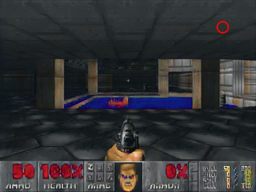
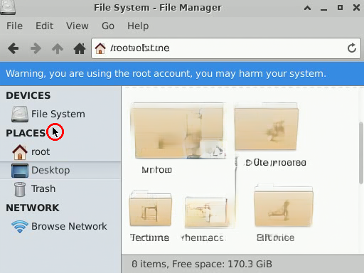
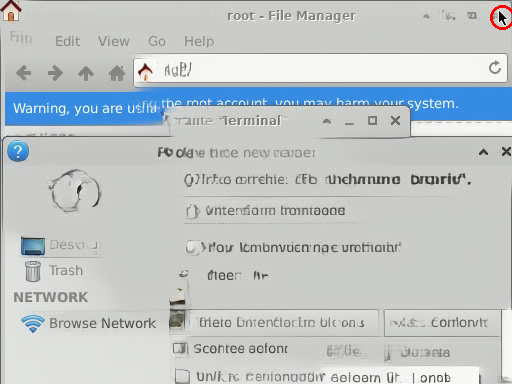

CS 486/686 · Lecture 24
Dissecting Diffusion
and World Models
From noise to video to an interactive world
One model, end to end: Wan2.1-T2V-1.3B
Start with the result
An image appears from noise


Recorded model output.
This is markup2im, an earlier DDPM-based equation generator—not Wan.
We use it to expose the same big idea: start unstructured, refine repeatedly.
Today: preserve that intuition, then dissect the flow-matching video model Wan2.1.
Source: Deng et al., “Latent Alignment and Variational Attention,” 2017.
The entire lecture in one line
One image → one video → one interactive world
Imagelearn transport from noise
→
Videoadd time, then compress it
→
Worldaccept actions in a closed loop
Explain flow matching as learned transport.
Trace every tensor through Wan2.1.
Separate the DiT from the VAE decoder.
Define what makes a generator a world model.
Act I · Learned transport
Begin with two endpoints of the same shape
 \(z_{\text{noise}}\)
known distribution; easy to sample
\(z_{\text{noise}}\)
known distribution; easy to sample
→
 \(z_{\text{data}}\)
an example from the data distribution
\(z_{\text{data}}\)
an example from the data distribution
Generation asks for a path from a sample we can draw to a sample we want.
Fixed noise · fixed data · move time
A straight path connects the endpointsinteractive
This pixel-space picture teaches the rule; Wan applies it to compressed video latents.
\(z_t=(1-t)z_{\text{noise}}+t z_{\text{data}}\)
Training target
The model learns which way to move
noisy state \(z_t\)where am I?
+
time \(t\)how far along?
+
text \(c\)where should I go?
→
velocity \(v_\theta\)direction through latent space
\[
v^\star=z_{\text{data}}-z_{\text{noise}},
\qquad
\mathcal L=\lVert v_\theta(z_t,t,c)-v^\star\rVert_2^2
\]
The straight training path gives us the correct velocity for free.
Inference
Generation integrates the learned velocity
1Sample \(z_0\sim\mathcal N(0,I)\): begin at noise.
2Ask \(v_\theta(z_t,t,c)\) which direction the prompt suggests.
3Take a numerical step: \(z_{t+\Delta t}\approx z_t+\Delta t\,v_\theta(z_t,t,c)\).
4Repeat until \(t=1\), then decode the final latent.
Training learns a vector field. A solver follows that field from noise to data.
Connect to the familiar picture
Flow matching and DDPM share the loop—not the target
DDPM-style diffusion
Usually defines a stochastic noising process and trains an \(\epsilon\)- or score-predictor.
Wan flow matching
Uses an interpolation path and trains a velocity predictor with flow_prediction.
Both generate by iteratively refining a noisy state.
Wan’s released Diffusers scheduler uses UniPC with flow sigmas and prediction_type="flow_prediction". See the Flow Matching paper.
The first bridge
An image is a one-frame video
[C, H, W]
→
[C, 1, H, W]
Same kind of values
A video merely adds a time axis to the image tensor.
Checkpoint caveat
The architecture admits one frame; the official 1.3B release is a text-to-video checkpoint, not a separate 1.3B image model.
Act II · Add time
Video must make every frame agree
Appearance
The robot should remain the same robot.
Motion
Positions should change smoothly over time.
Physics
Objects should not pop in, vanish, or teleport.
Why not model pixels directly?
Five seconds already means 97 million values
97,044,480
RGB values in \(81\times480\times832\times3\)
81 frames
About 5.06 seconds at 16 fps.
480 × 832
399,360 pixels per frame.
Every solver step
Repeated computation would touch a huge tensor.
Compress first; run the expensive generative model in a smaller space.
Compress pixels into latents
The Wan-VAE is a learned video codec
video \(x\)81 RGB frames
→
VAE encodercompress space and time
→
latent \(z\)continuous feature grid
→
VAE decoderreconstruct pixels
→
\(\hat x\)reconstructed video
The VAE is trained beforehand. Wan’s DiT learns to generate its latent tensors.
A useful analogy—with a boundary
The VAE acts like a continuous video tokenizer
Text tokenizer
“robot waves” → integer IDs from a finite vocabulary.
[12984, 21143]
Wan-VAE encoder
81 frames → real-valued vectors on a space-time grid.
[-0.73, 1.20, …]
Useful analogy: both shorten the sequence. Important difference: Wan has no codebook, token IDs, or vocabulary.
Wan-VAE shape trace
Compress space by 8× and time by 4×
[3, 81, 480, 832]
RGB video
→
[16, 21, 60, 104]
continuous latent
time: 81 → 21
height: 480 → 60
width: 832 → 104
channels: 3 → 16
Axis compression is \(4\times8\times8\), but channels grow: overall, about 46× fewer scalar values, not 256×.
Turn the latent grid into a sequence
The DiT sees 32,760 video tokens
Wan patch size: (1, 2, 2) in latent time, height, width.
\(21\times(60/2)\times(104/2)\)
\(=21\times30\times52=32{,}760\) tokens
Each 64-value patch projects to width \(d=1536\).
The transformer now handles a sequence of compact space-time patches—not 97 million pixel values.
Compression is not free
The VAE preserves scenes better than tiny details
The DiT cannot generate information the codec systematically discards.
Real one-frame encode/decode through the official Wan-VAE; revision and hashes are in wan_vae_roundtrip.json.
Return to the same equation
Wan transports a video latent, not pixels
\[
z_t=(1-t)z_{\text{noise}}+t z_{\text{video}},
\qquad
z_t\in\mathbb R^{16\times21\times60\times104}
\]
Same shape
Noise and clean video latents line up element by element.
Same target
Predict velocity from noise toward the clean latent.
Different scale
Every state represents an entire 81-frame clip.
Act III · Dissect the checkpoint
Wan2.1-T2V-1.3B at a glance
Wan2.1
T2V-1.3B
latent flow-matching Diffusion Transformer
30DiT blocks
1536model width
12attention heads
81frames
16 fpsplayback
480pofficial target
“1.3B” names only the DiT. The full pipeline also loads a roughly 127M-parameter Wan-VAE and a much larger multi-billion-parameter umT5-XXL text encoder.
Sources: Wan technical report, official model card, and Diffusers checkpoint configs.
Three pretrained components
Prompt in; video out
promptnatural language
→
umT5contextual text states
+
latent noisethe state to transport
→
DiT + UniPCrepeated latent updates
→
Wan-VAE decoderone final pixel decode
→
video81 RGB frames
Latent noise is the evolving state; text conditions every DiT update through cross-attention.
The pipeline is not one network: language encoder, latent generator, and pixel decoder have different jobs.
Language steers motion and appearance
Text enters every DiT block through cross-attention
video tokens
queries: “what should this space-time patch become?”
Q × K,V
umT5 hidden states
keys and values: contextual 4096-D representations of up to 512 prompt tokens
\[
\operatorname{Attention}(Q_{\text{video}},K_{\text{text}},V_{\text{text}})
\]
The DiT does not read raw words; it reads contextual hidden states from a text model.
Inside one of 30 blocks
A Wan block mixes video, text, and time
video tokens
+ timestep
video self-attention
3D RoPE
text cross-attention
feed-forward network
time modulation
scale / shift / gate
× 30 blocks
Self-attention coordinates space and time; cross-attention aligns that evolving clip with the prompt.
A name that often causes confusion
“Diffusion Transformer” does not mean pixel decoder
DiT: velocity predictor
Runs at every solver step. Reads a noisy latent and predicts how that latent should change.
[16,21,60,104] → [16,21,60,104]
Wan-VAE decoder: pixel renderer
Runs after transport is finished. Converts the final clean latent into 81 RGB frames.
[16,21,60,104] → [3,81,480,832]
The DiT changes latent velocity repeatedly; the VAE paints pixels once.
One training example
Freeze the encoders; train the DiT on velocity error
1Encode a real video: \(x\rightarrow z_{\text{data}}\). Encode its caption with umT5.
2Sample \(z_{\text{noise}}\sim\mathcal N(0,I)\) and \(t\sim U[0,1]\).
3Mix them: \(z_t=(1-t)z_{\text{noise}}+tz_{\text{data}}\).
4Train \(v_\theta(z_t,t,c)\) toward \(z_{\text{data}}-z_{\text{noise}}\).
Trainable: the 1.3B DiT. Frozen: Wan-VAE and umT5.
One generated clip
UniPC follows prompt-guided velocities
\[
\hat v=v_{\text{uncond}}+s\left(v_{\text{cond}}-v_{\text{uncond}}\right)
\]
Start
Sample one latent-noise video tensor.
Repeat 30 times
Run the DiT, combine conditional and unconditional velocities, then let UniPC update \(z\).
Finish
Decode the final latent once and play 81 frames at 16 fps.
Flow matching still uses iterative inference; a straighter training path does not make generation one-shot.
Official Wan checkpoint · deterministic run
Watch the generated cliprecorded model output
Prompt: a blue robot writes \(E=mc^2\), turns, and waves · seed 486 · 30 steps · guidance 5.0

PDF filmstrip from the same 81-frame clip.
Generated with Wan-AI/Wan2.1-T2V-1.3B-Diffusers; full revision, runtime, prompt, settings, and hashes are in wan_samples.json.
No hidden shape changes
Trace every representation end to end
stage
representation
job
umT5
[≤512, 4096]
contextual prompt states
latent noise
[1,16,21,60,104]
state being transported
DiT tokens
[1,32760,1536]
attention sequence inside DiT
predicted velocity
[1,16,21,60,104]
same shape as latent state
decoded video
[1,3,81,480,832]
RGB output
Text stays a side input; the solver repeatedly changes only the video latent.
Where stock Wan stops
A beautiful clip is not yet an environment
Open loop
The prompt is fixed before generation begins.
Slow
Thirty large DiT evaluations are far from interactive latency.
Finite
The checkpoint emits a fixed 81-frame horizon.
Joint clip
Stock Wan denoises the whole bidirectional clip; its causal VAE does not make the DiT autoregressive.
To become a world model, the generator must observe a new action and predict what happens next—again and again.
Act IV · Close the loop
A controllable video is still not a world model
Video generator
prompt once → fixed clip
c → o₁,…,o₈₁
World model
observe → act → predict → feed back
(o<t, a≤t) → oₜ
Control becomes world modeling only when actions arrive during generation and outputs become the next inputs.
The autoregressive analogy
Predict the next observation, then reuse it
history \(o_{<t}\)
+
new action \(a_t\)
→
next observation \(o_t\)
feed the prediction back into history ↺
\[
p(o_{1:T}\mid a_{1:T})=\prod_{t=1}^{T}p(o_t\mid o_{<t},a_{\le t})
\]
Like next-token prediction, except each “token” can be a frame or a short latent video chunk.
How researchers adapt Wan
Three changes turn open-loop video into a world model
1 · Add conditions
Encode current frame and history.
Embed mouse, keyboard, or game actions.
2 · Train closed loop
Predict causal chunks, not one fixed clip.
Include self-generated histories to reduce exposure bias.
3 · Make it fast
Distill many solver steps into a few.
Stream chunks and cache reusable context.
The DiT can stay recognizable while its inputs, training distribution, and inference loop change.
Direct Wan2.1 example: minWM.
Evidence, not just a thought experiment
Wan-family models have already become interactive
minWM
A direct Wan2.1 adaptation: action-conditioned next-chunk prediction, self-forcing, distillation, and streaming generation.
Matrix-Game 2.0
A Wan-architecture-lineage system that targets long, real-time, action-conditioned game simulation.
“Fine-tune Wan into a world model” is a concrete engineering recipe—not a claim that stock Wan is already one.
Sources: minWM repository and Matrix-Game 2.0 project.
A different architecture, the same formulation
State tracker first; visual renderer second
Blue: recurrent state remembers interaction history. Violet: latent diffusion renders the next screen.
Action-conditioned rollout
One user action changes what comes nextrecorded model output
Step through: double-click Home → file manager opens → close it.
 1 · double-click Homeaction enters the model
1 · double-click Homeaction enters the model 2 · file manager openspredicted transition
2 · file manager openspredicted transition 3 · close → desktopprediction fed back
3 · close → desktopprediction fed back
What can a learned environment absorb?
Synthetic demonstrations can add a new behavior
 1 · Doom icon appearssynthetic demonstrations
1 · Doom icon appearssynthetic demonstrations
2 · double-click launcheslearned transition3 · ESC returnsaction-conditioned response
Demonstrate a transition—even synthetically—and the learned simulator can make it part of its world.
NeuralOS result; the Doom trajectories were fabricated and inserted into training data.
Closed-loop failure 1 · Causal coverage
The model can mistake correlation for action

→

Training shortcut
The agent almost always clicked after hovering near ×, so the model learned “hover means close.”
Data fix
Random exploration supplies hover-without-click counterexamples and separates correlation from action.
Closed-loop failure 2 · Exposure bias
Small errors become the next inputs


one imperfect frame → model conditions on it → a larger error → drift
Train on self-generated histories too. Scheduled sampling and self-rollout training narrow the train–inference gap.
End where an environment begins
A learned operating systemrecorded + live link

Recorded NeuralOS rollout.
A generator becomes an environment when it predicts what happens next, responds to actions, and feeds its own output back.
Wan2.1 and NeuralOS use different architectures. The shared idea is action-conditioned prediction in a closed loop.
 input frame
high-frequency text and edges
input frame
high-frequency text and edges
 Wan-VAE reconstruction
same scene; some fine detail is softened
Wan-VAE reconstruction
same scene; some fine detail is softened